SharpConsoleUI
A terminal GUI framework for .NET.
Per-cell alpha blending, double-buffered compositing with occlusion culling, and a Measure→Arrange→Paint layout pipeline. Each window runs on its own async thread. Gradient backgrounds propagate through every transparent control automatically.

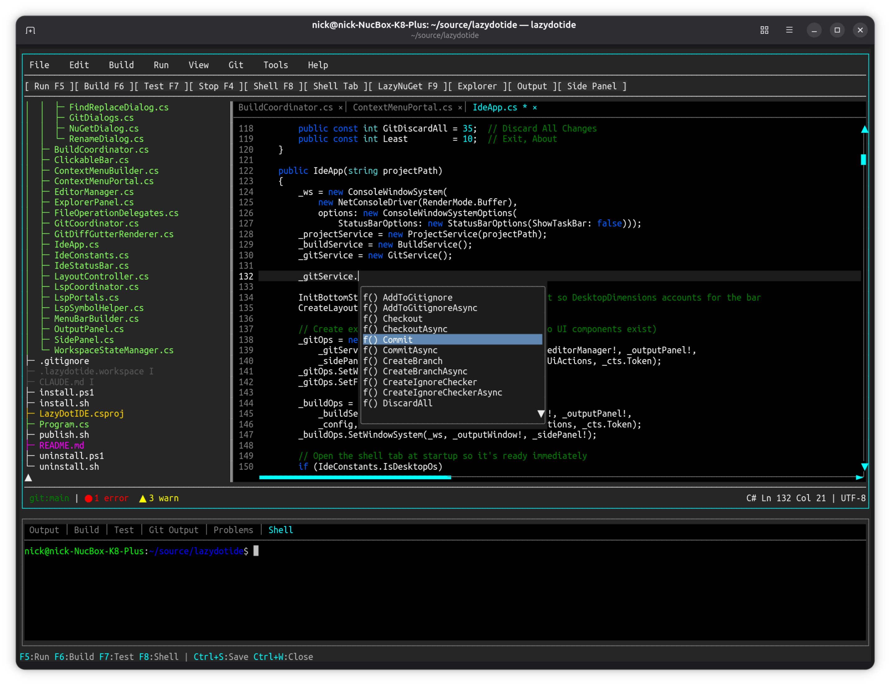
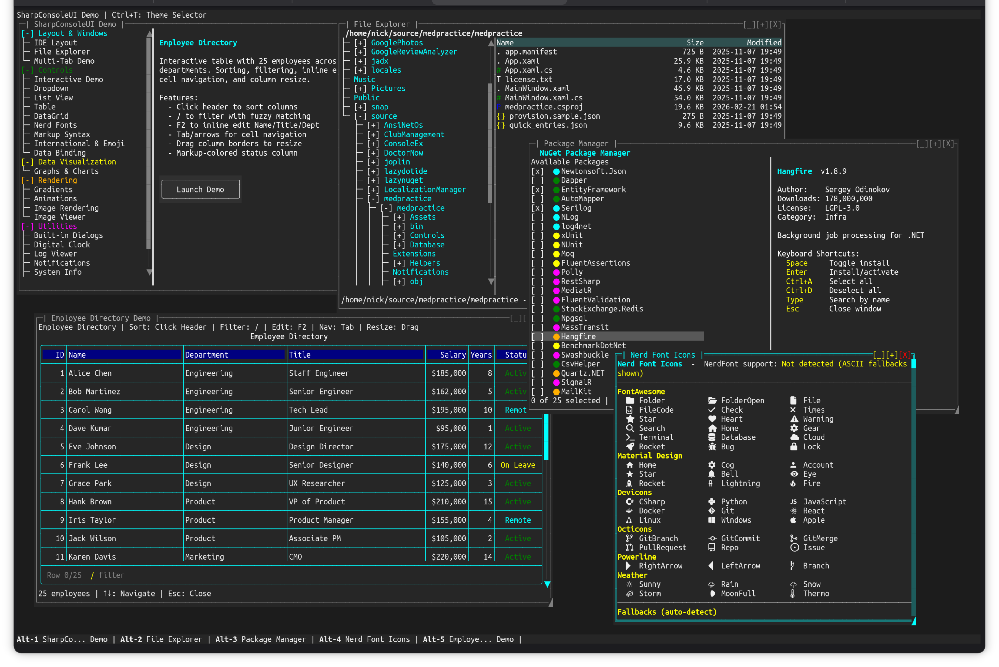
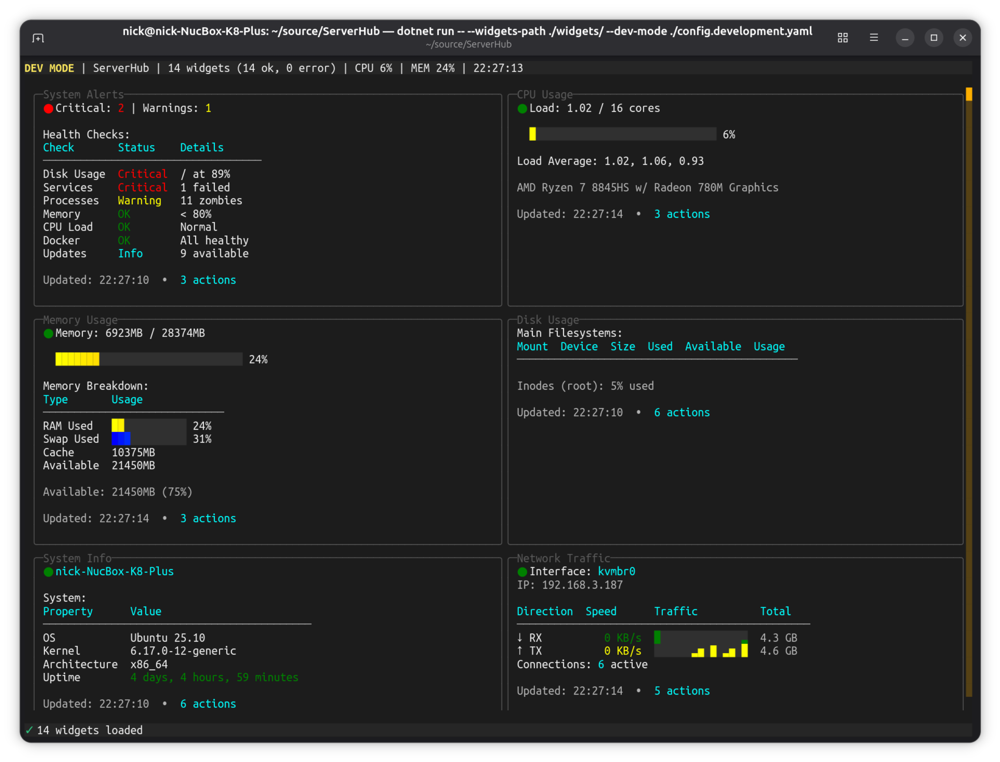
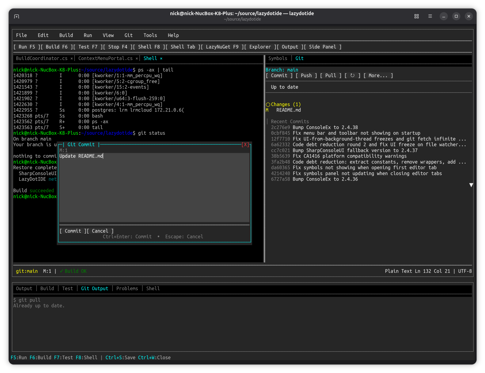
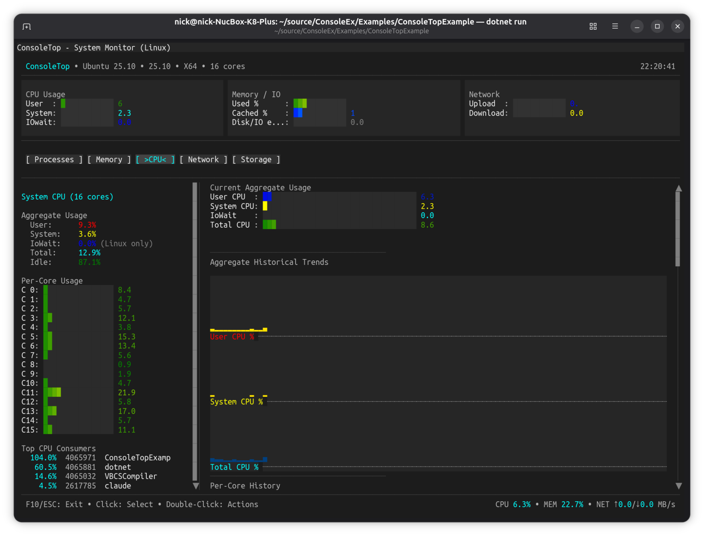
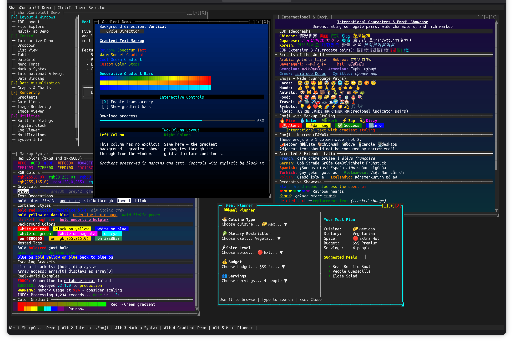
//Features
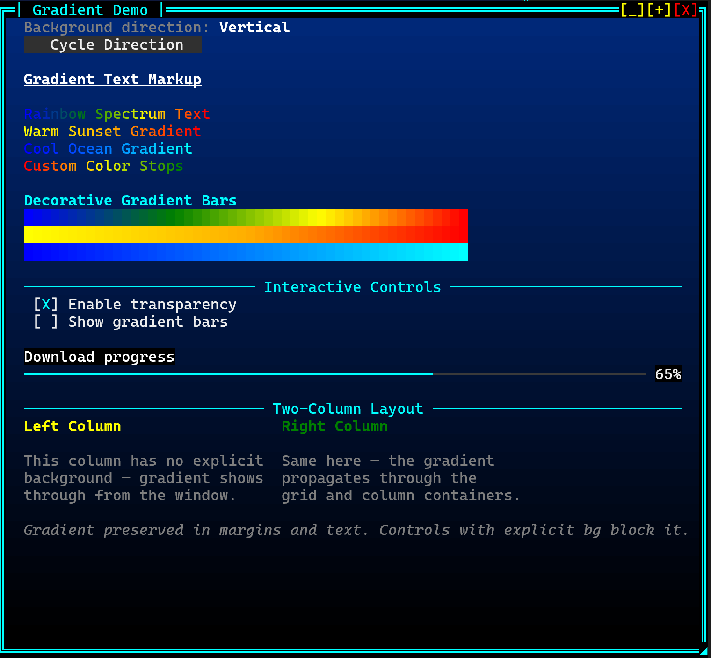
// Real Compositor
Gradient backgrounds propagate through every transparent control automatically —
DataGrids, containers, margins, all transparent to the compositor beneath.
No control needs to know the gradient exists.
Per-cell alpha blending on foreground and background: write
[#00FF0080]50% alpha[/] in any label, on any control,
and the compositor handles the rest.
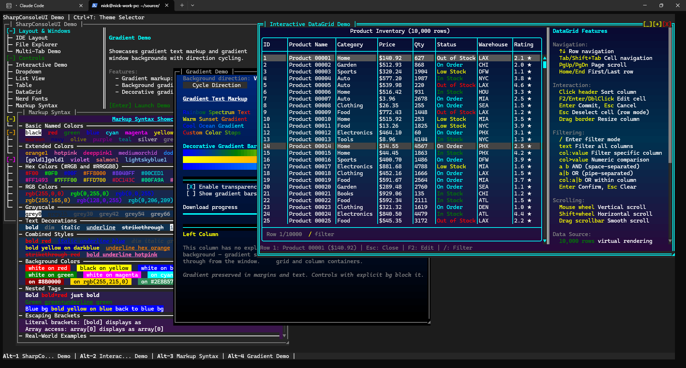
// Async Windows
Each window runs on its own async thread and updates independently. Multiple panels animate simultaneously without blocking each other. No timer juggling — just async/await and CancellationToken.
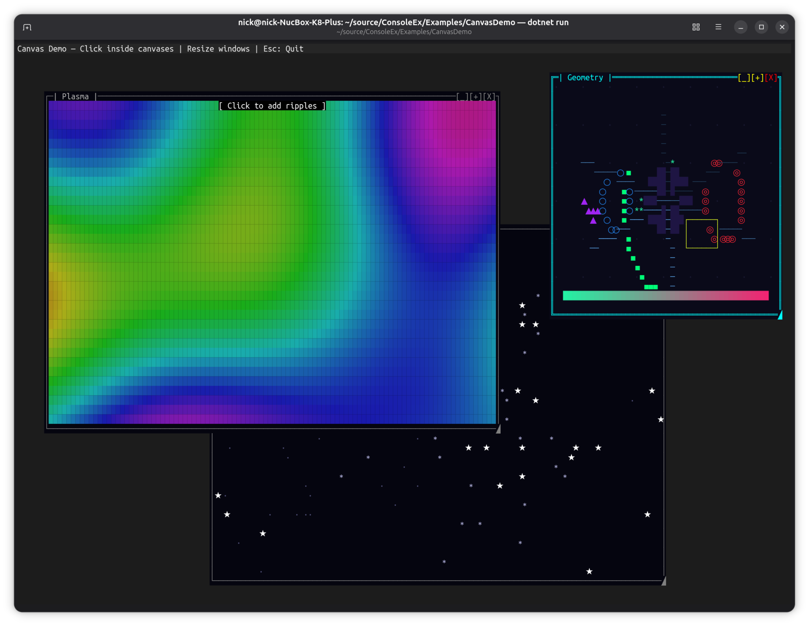
// CanvasControl
30+ drawing primitives — lines, arcs, circles, rectangles, polygons, beziers, text, gradients — in both retained and immediate rendering modes. Plasma effects, particle systems, interactive ripples, geometry scenes. Full mouse event support. Drop it in any window like any other control.
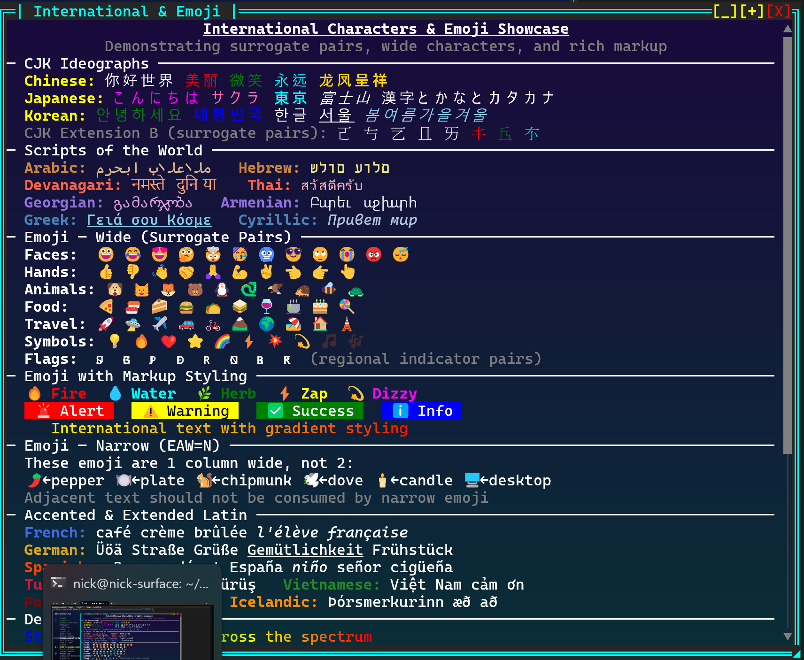
// Full Unicode
CJK wide characters, surrogate pair emoji, RTL scripts, regional indicator flags — correct at the cell level throughout the compositor, diff renderer, and ANSI output. Width-aware everywhere, not an afterthought.
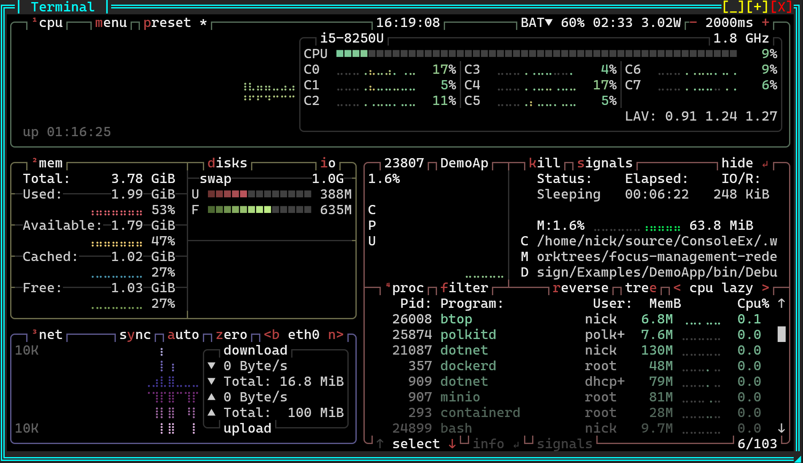
// Unique Controls
PTY-backed terminal emulator: run a real shell — bash, vim, btop — inside a UI panel with character-perfect ANSI capture. ImageControl renders PNG, JPEG, WebP via half-block Unicode. CanvasControl with 30+ drawing primitives. SpectreRenderableControl wraps any Spectre.Console IRenderable natively.
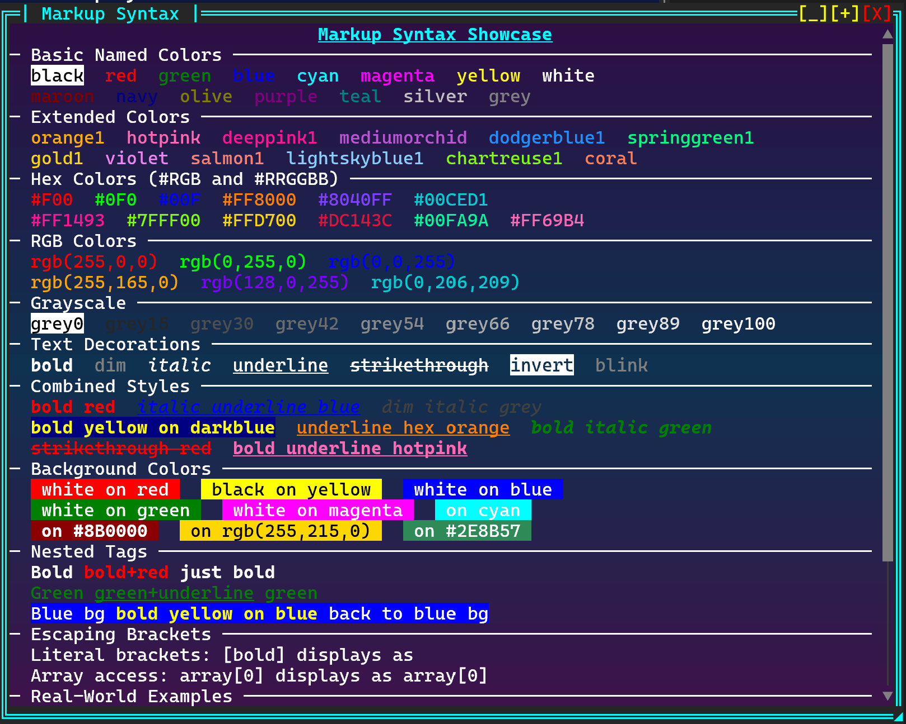
// Markup Everywhere
Write [red]alert[/] in any string, on any control, without a second thought.
Named colors, RGB, full RGBA hex ([#FF000080]50% alpha[/]),
bold, italic, underline, background colors, nested styles —
composited through the alpha pipeline just like everything else.

// Alpha Blending
Porter-Duff compositing at the cell level — foreground and background independently
alpha-composited on every render pass. Glass panels, pulse effects, animated alpha,
gradient-transparent controls. Write [#00FF0080] anywhere and the
compositor does the rest. No other .NET terminal library does this.

// Video Playback
Play MP4, MKV, WebM and more directly inside a window. FFmpeg decodes frames; three render modes — half-block (best color), ASCII (density ramp), braille (highest resolution) — convert pixels to terminal cells at up to 30 fps. Auto-resize on window drag, overlay status bar, looping. No other terminal UI framework plays video.
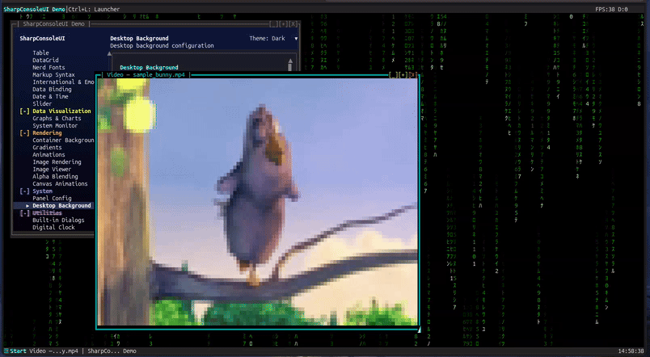
// Desktop Background
Solid colors, gradients, tiled patterns, or animated effects — four background modes with layered animation on top. Matrix rain, plasma, starfield, or build your own. Cached buffer means zero impact on window performance.
//Differentiators
What only SharpConsoleUI does
Capabilities absent from every other .NET terminal UI library.
Window gradients propagate through every transparent control automatically. DataGrids, containers, margins — all transparent to the compositor beneath. No control needs to know the gradient exists.
Porter-Duff compositing at the cell level. Glass panels. Animated alpha. Pulse effects. Foreground and background independently alpha-composited against whatever the compositor has already rendered.
Full Cell[,] access before and after every render pass. Animated backgrounds, blur, color grading, fractals — anything that operates on the raw cell buffer.
Each window is an async Task. Multiple panels update simultaneously at different rates without coordination. Natural, not engineered.
TerminalControl embeds a real shell process inside a UI panel. Run bash, vim, htop inside your application. Linux only.
ImageControl displays PNG, JPEG, WebP and more via half-block Unicode. Fit, Fill, Stretch, None scale modes.
Time-based tweened animations with easing functions built on PostBufferPaint. FadeIn, FadeOut, SlideIn, custom effects.
SpectreRenderableControl wraps any IRenderable as a native control. Every Spectre widget works inside SharpConsoleUI windows without modification.
VideoControl plays MP4/MKV/WebM via FFmpeg in three render modes: half-block (best color), ASCII (density ramp), braille (highest resolution). Auto-resize, overlay bar, looping.
Configurable taskbar panels with a start menu, window list, clock, performance counters, and custom elements. Fluent builder API — compose panels from built-in or custom elements, place them top or bottom.
Solid colors, gradients, tiled patterns, or animated effects behind all windows. Layer animations on top of any background type. Cached buffer — zero performance impact on windows above.
//Quick Start
dotnet add package SharpConsoleUIusing SharpConsoleUI;
using SharpConsoleUI.Builders;
using SharpConsoleUI.Configuration;
using SharpConsoleUI.Controls;
using SharpConsoleUI.Helpers;
var windowSystem = new ConsoleWindowSystem(
new NetConsoleDriver(RenderMode.Buffer));
var gradient = ColorGradient.FromColors(
new Color(0, 20, 60),
new Color(0, 5, 20));
var window = new WindowBuilder(windowSystem)
.WithTitle("SharpConsoleUI")
.WithSize(70, 22)
.Centered()
.WithBackgroundGradient(gradient, GradientDirection.Vertical)
.Build();
// PreBufferPaint — fires before controls paint
window.PreBufferPaint += (buffer, dirty, clip) =>
{
// Animated background, fractal, pattern —
// whatever you want beneath the controls
};
// PostBufferPaint — fires after controls paint
window.PostBufferPaint += (buffer, dirty, clip) =>
{
// Color grade, blur, overlay effects
};
// Controls inherit the gradient — no background needed
window.AddControl(new MarkupControl(new List<string>
{
"[bold cyan]Real compositor. Full alpha blending.[/]",
"[dim]The terminal is just the output surface.[/]",
"",
"[#FF000080]This text has 50% alpha foreground[/]",
"Controls are transparent to the gradient beneath."
}));
windowSystem.AddWindow(window);
windowSystem.Run();